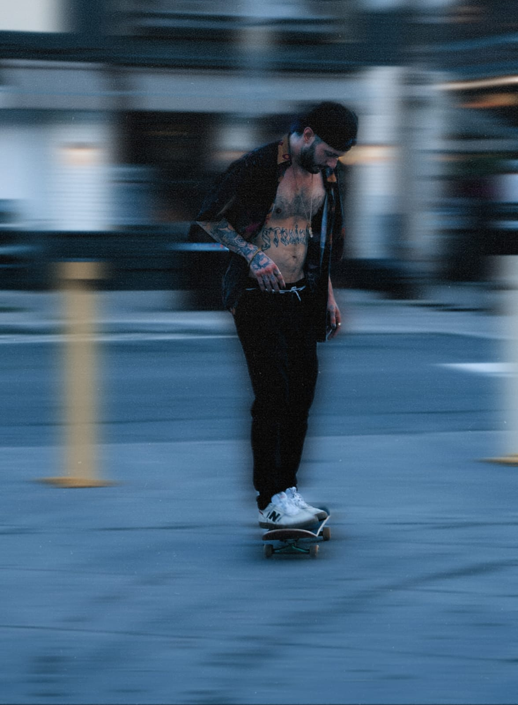
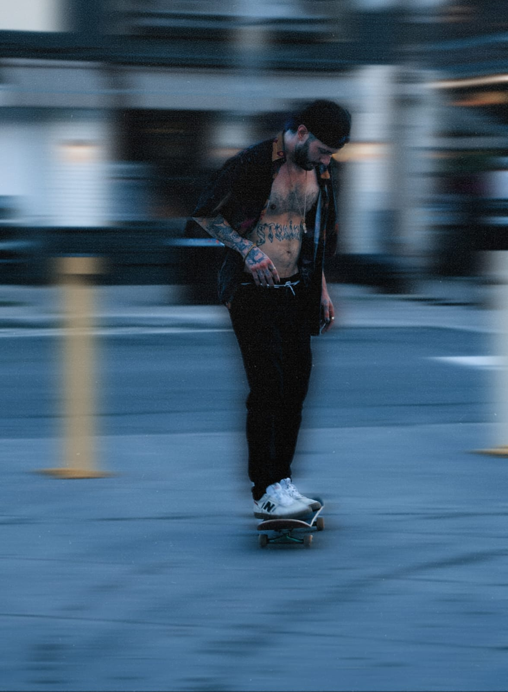
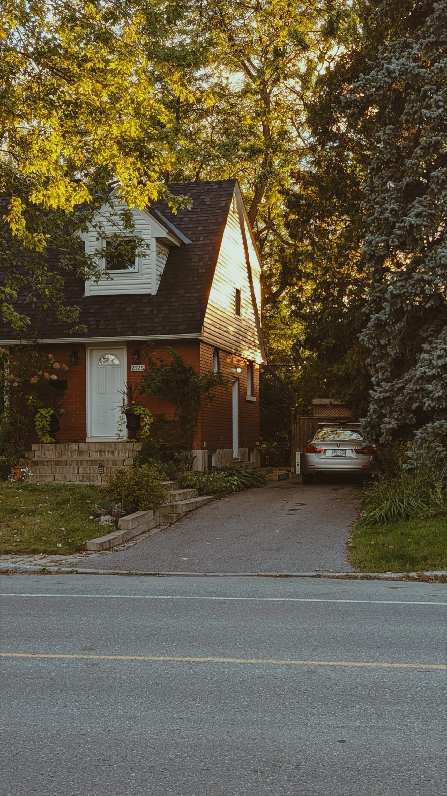
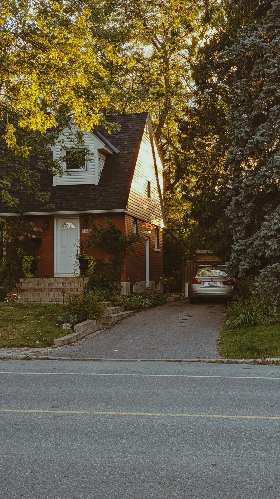

About Me
I am a passionate Visual artist, who loves to travel, write and take photos. Art and design have always been a source of passion and inspiration for me, driving my commitment to continuously expand my knowledge and skills in this field. The immense creativity found in art and design served as a tremendous inspiration for me to pursue higher education. Motivated by this inspiration, I enrolled in University to pursue a bachelor's degree in Visual Communication.
Quote
" I know of no greater purpose than to perish in the attempt of the Great and the Impossible - Friedrich Nietzsche
My Hobbies
- Travelling - For me, Travelling is a way of finding myself out there. I'm a person who actually love to wander, write, take photos. Once I came across a quote, that goes by this "Humans and trees were created on planet earth and humans were gifted with legs instead of roots to travel the world"
- Taking Photos - I solely believe that life is temporary and ART is forever and as a passionate individual about Art, I make photographs, which according to me is the only way to freeze time or a moment
-
Photo Gallery

 

 

- Writing - I always try to bring my ideas into life as an artist. In order to achieve that I write down my thoughts and brainstorm ideas out of it. So I believe writing down my ideas help me to be always creative and organized